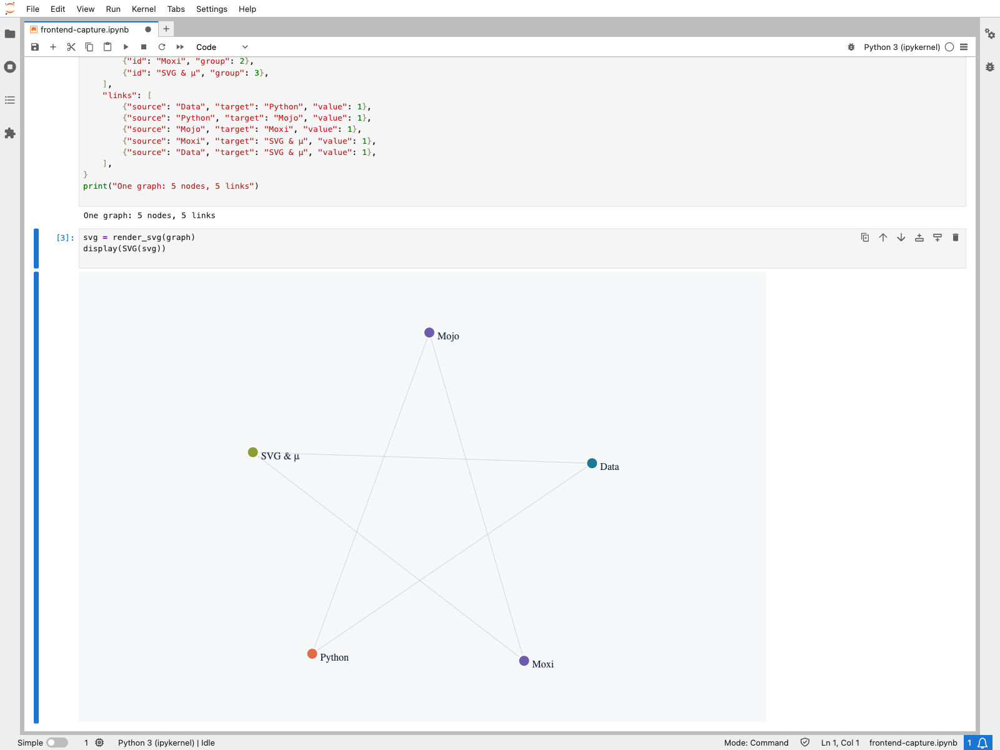
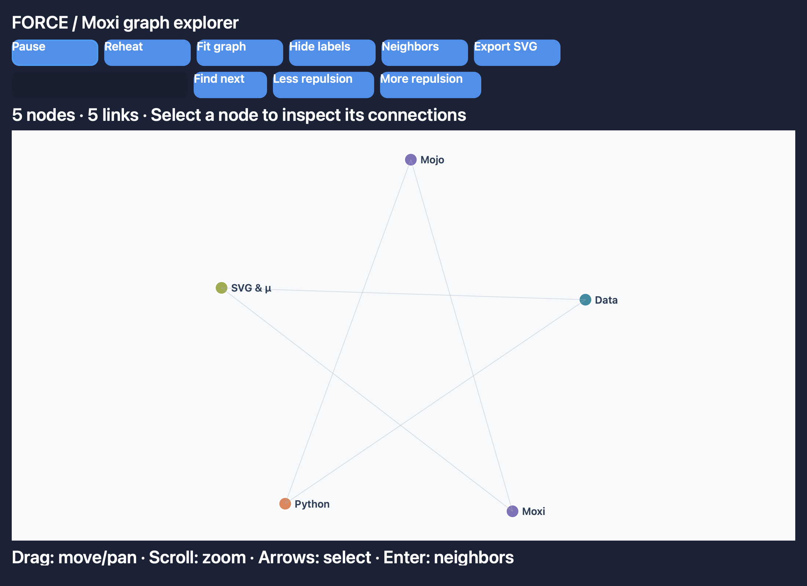
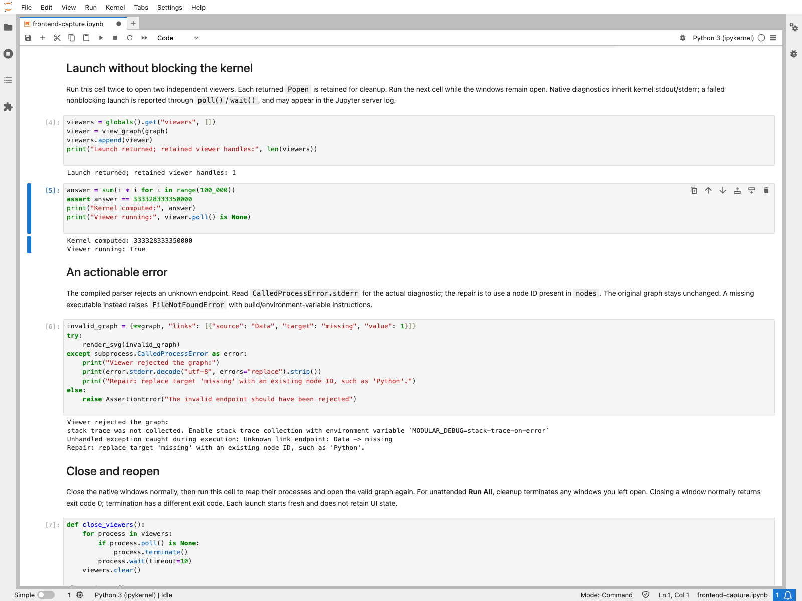
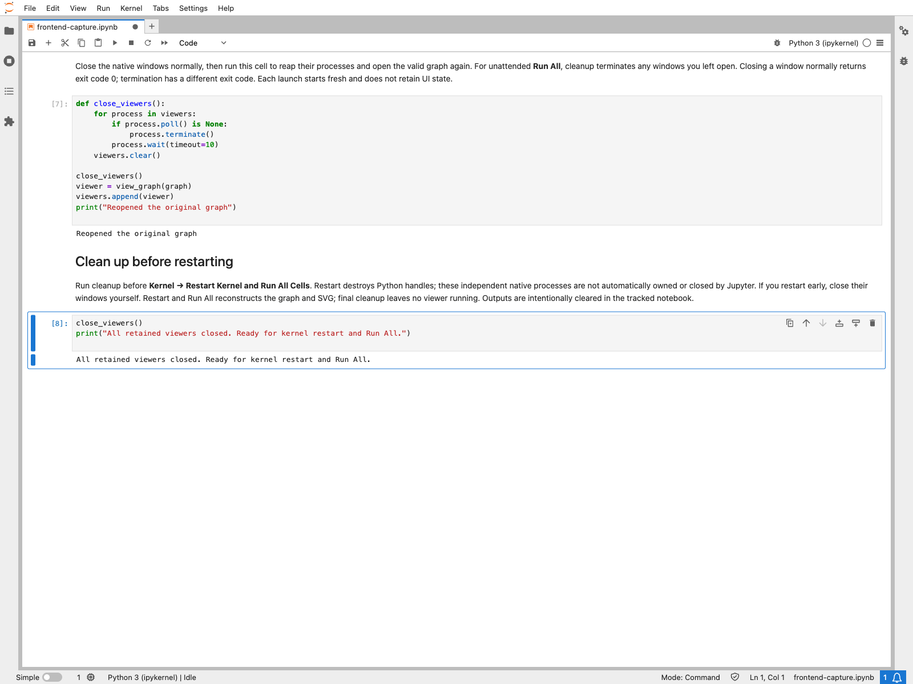

One graph defined in JupyterLab Action: Run all cells in a fresh local Python kernel Expected: Five synthetic nodes and five links feed both helpers
initial · browser · 1600 × 1200 pixels

Actual JupyterLab static SVG output Action: Render the graph with render_svg and IPython.display.SVG Expected: All five labels are readable, including SVG & μ
initial · browser · 1600 × 1200 pixels

Live native content view; excludes window chrome Action: Launch twice; execute the computation cell while both viewers remain open Expected: The same five-node graph renders in the compiled AppKit viewer
interaction · native-window · 2200 × 1600 pixels

Compiled diagnostic with an actionable repair Action: Try a link whose target is missing Expected: Unknown link endpoint: Data -> missing; replace it with an existing ID
recovery · browser · 1600 × 1200 pixels
Reopened native content view Action: Close both viewers through performClose, verify exit 0, then reopen Expected: The original valid graph renders again in a fresh process
result · native-window · 2200 × 1600 pixels
Native content view after kernel restart Action: Restart the test kernel, verify old globals are absent, and rerun every cell Expected: A new viewer renders the reconstructed graph; final cleanup reaps it
recovery · native-window · 2200 × 1600 pixels

JupyterLab restart and Run All completed Action: Use Kernel → Restart Kernel and Run All Cells and confirm Restart Expected: Eight code cells finish in a new kernel PID, including reopen and final cleanup
result · browser · 1600 × 1200 pixels
Contact sheetReproduce
From repository root: bash examples/fdg/scripts/build.sh; install optional notebook/requirements-capture.txt; run examples/fdg/.venv-notebook/bin/python examples/fdg/notebook/verify.py, capture_frontend.py, then gallery.py (each at that same notebook/ path). See README.md for exact commands.
P03 local Python notebook: graph/SVG, nonblocking native viewer, actionable error, close/reopen and kernel restart. Native frames are live content-view captures with test-only injection, not desktop/compositor or physical-input acceptance.
Screenshots show recorded states. They do not establish latency, scientific accuracy, physical IME, screen-reader behavior, or human usability.